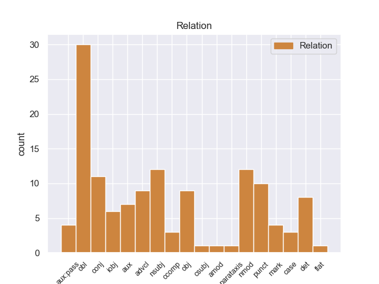
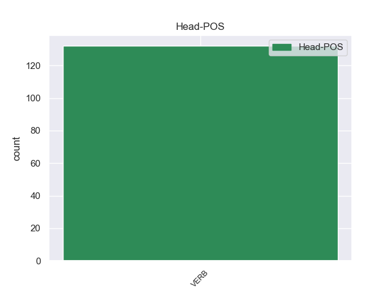
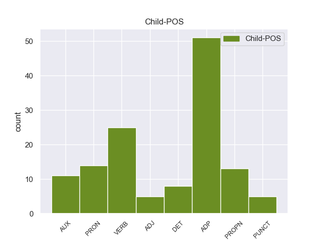

Distribution of features within this leaf



Agreement Rules sorted by frequency.
When the head token is VERB and the dependent token is ADP.
1 Los _ _ _ _ 0 _ _ _
2 muebles _ _ _ _ 0 _ _ _
3 y _ _ _ _ 0 _ _ _
4 los _ _ _ _ 0 _ _ _
5 objetos objetos ADP _ Gender=Masc|Number=Sing 16 det _ _
6 de _ _ _ _ 0 _ _ _
7 decoración _ _ _ _ 0 _ _ _
8 ( _ _ _ _ 0 _ _ _
9 cuadros _ _ _ _ 0 _ _ _
10 , _ _ _ _ 0 _ _ _
11 fuentes _ _ _ _ 0 _ _ _
12 , _ _ _ _ 0 _ _ _
13 lámparas _ _ _ _ 0 _ _ _
14 también _ _ _ _ 0 _ _ _
15 ) _ _ _ _ 0 _ _ _
16 crean crean VERB _ Gender=Fem|Number=Sing 0 _ _ _
17 un _ _ _ _ 0 _ _ _
18 ambiente _ _ _ _ 0 _ _ _
19 de _ _ _ _ 0 _ _ _
20 paz _ _ _ _ 0 _ _ _
21 y _ _ _ _ 0 _ _ _
22 de _ _ _ _ 0 _ _ _
23 tranquilidad _ _ _ _ 0 _ _ _
24 , _ _ _ _ 0 _ _ _
25 que _ _ _ _ 0 _ _ _
26 me _ _ _ _ 0 _ _ _
27 gustaría _ _ _ _ 0 _ _ _
28 tener _ _ _ _ 0 _ _ _
29 en _ _ _ _ 0 _ _ _
30 mi _ _ _ _ 0 _ _ _
31 casa _ _ _ _ 0 _ _ _
32 . _ _ _ _ 0 _ _ _
When the head token is VERB and the dependent token is ADP. and the head token is VERB and the dependent token is VERB.
1 Las _ _ _ _ 0 _ _ _
2 láminas _ _ _ _ 0 _ _ _
3 de _ _ _ _ 0 _ _ _
4 las _ _ _ _ 0 _ _ _
5 hojas _ _ _ _ 0 _ _ _
6 son _ _ _ _ 0 _ _ _
7 verdes _ _ _ _ 0 _ _ _
8 y _ _ _ _ 0 _ _ _
9 nacen nacen VERB _ Gender=Fem|Number=Sing 17 conj _ _
10 en _ _ _ _ 0 _ _ _
11 largos _ _ _ _ 0 _ _ _
12 y _ _ _ _ 0 _ _ _
13 delgados _ _ _ _ 0 _ _ _
14 pecíolos _ _ _ _ 0 _ _ _
15 y _ _ _ _ 0 _ _ _
16 se _ _ _ _ 0 _ _ _
17 dividen dividen VERB _ Gender=Fem|Number=Sing 0 _ _ _
18 en _ _ _ _ 0 _ _ _
19 tres _ _ _ _ 0 _ _ _
20 foliolos _ _ _ _ 0 _ _ _
21 en _ _ _ _ 0 _ _ _
22 los _ _ _ _ 0 _ _ _
23 que _ _ _ _ 0 _ _ _
24 cada _ _ _ _ 0 _ _ _
25 uno _ _ _ _ 0 _ _ _
26 tiene _ _ _ _ 0 _ _ _
27 lóbulos _ _ _ _ 0 _ _ _
28 redondeados _ _ _ _ 0 _ _ _
29 a _ _ _ _ 0 _ _ _
30 lo _ _ _ _ 0 _ _ _
31 largo _ _ _ _ 0 _ _ _
32 de _ _ _ _ 0 _ _ _
33 los _ _ _ _ 0 _ _ _
34 bordes _ _ _ _ 0 _ _ _
35 delanteros _ _ _ _ 0 _ _ _
36 . _ _ _ _ 0 _ _ _
When the head token is VERB and the dependent token is ADP. and the head token is VERB and the dependent token is VERB. and the head token is VERB and the dependent token is PROPN.
1 Elder _ _ _ _ 0 _ _ _
2 Aaron _ _ _ _ 0 _ _ _
3 Davis _ _ _ _ 0 _ _ _
4 ( _ _ _ _ 0 _ _ _
5 Steve _ _ _ _ 0 _ _ _
6 Sandvoss _ _ _ _ 0 _ _ _
7 ) _ _ _ _ 0 _ _ _
8 , _ _ _ _ 0 _ _ _
9 un _ _ _ _ 0 _ _ _
10 joven _ _ _ _ 0 _ _ _
11 misionero _ _ _ _ 0 _ _ _
12 mormón _ _ _ _ 0 _ _ _
13 de _ _ _ _ 0 _ _ _
14 Pocatello _ _ _ _ 0 _ _ _
15 ( _ _ _ _ 0 _ _ _
16 Idaho idaho PROPN _ Mood=Ind|Number=Sing|Person=3|Tense=Pres|VerbForm=Fin 23 nsubj _ _
17 ) _ _ _ _ 0 _ _ _
18 , _ _ _ _ 0 _ _ _
19 recibe _ _ _ _ 0 _ _ _
20 la _ _ _ _ 0 _ _ _
21 orden _ _ _ _ 0 _ _ _
22 de _ _ _ _ 0 _ _ _
23 marchar marchar VERB _ Gender=Fem|Number=Sing 0 _ _ _
24 se _ _ _ _ 0 _ _ _
25 a _ _ _ _ 0 _ _ _
26 Los _ _ _ _ 0 _ _ _
27 Ángeles _ _ _ _ 0 _ _ _
28 con _ _ _ _ 0 _ _ _
29 otros _ _ _ _ 0 _ _ _
30 tres _ _ _ _ 0 _ _ _
31 misioneros _ _ _ _ 0 _ _ _
32 para _ _ _ _ 0 _ _ _
33 predicar _ _ _ _ 0 _ _ _
34 la _ _ _ _ 0 _ _ _
35 fe _ _ _ _ 0 _ _ _
36 mormona _ _ _ _ 0 _ _ _
37 . _ _ _ _ 0 _ _ _
When the head token is VERB and the dependent token is ADP. and the head token is VERB and the dependent token is VERB. and the head token is VERB and the dependent token is PROPN. and the head token is VERB and the dependent token is PRON.
1 Debido _ _ _ _ 0 _ _ _
2 a _ _ _ _ 0 _ _ _
3 el _ _ _ _ 0 _ _ _
4 éxito _ _ _ _ 0 _ _ _
5 mundial _ _ _ _ 0 _ _ _
6 de _ _ _ _ 0 _ _ _
7 Gran _ _ _ _ 0 _ _ _
8 hermano _ _ _ _ 0 _ _ _
9 , _ _ _ _ 0 _ _ _
10 Australia _ _ _ _ 0 _ _ _
11 decidió _ _ _ _ 0 _ _ _
12 también _ _ _ _ 0 _ _ _
13 comprar _ _ _ _ 0 _ _ _
14 el _ _ _ _ 0 _ _ _
15 formato _ _ _ _ 0 _ _ _
16 que _ _ _ _ 0 _ _ _
17 lo él PRON _ Case=Acc|Gender=Masc|Number=Sing|Person=3|PrepCase=Npr|PronType=Prs 18 obj _ _
18 puso poner VERB _ Mood=Ind|Number=Sing|Person=3|Tense=Past|VerbForm=Fin 0 _ _ _
19 a _ _ _ _ 0 _ _ _
20 el _ _ _ _ 0 _ _ _
21 aire _ _ _ _ 0 _ _ _
22 el _ _ _ _ 0 _ _ _
23 23 _ _ _ _ 0 _ _ _
24 de _ _ _ _ 0 _ _ _
25 abril _ _ _ _ 0 _ _ _
26 de _ _ _ _ 0 _ _ _
27 2001 _ _ _ _ 0 _ _ _
28 . _ _ _ _ 0 _ _ _
When the head token is VERB and the dependent token is ADP. and the head token is VERB and the dependent token is VERB. and the head token is VERB and the dependent token is PROPN. and the head token is VERB and the dependent token is PRON. and the head token is VERB and the dependent token is AUX.
1 Project _ _ _ _ 0 _ _ _
2 fue ser AUX _ Mood=Ind|Number=Sing|Person=3|Tense=Past|VerbForm=Fin 3 aux:pass _ _
3 producido producir VERB _ Gender=Masc|Number=Sing|Tense=Past|VerbForm=Part 0 _ _ _
4 por _ _ _ _ 0 _ _ _
5 el _ _ _ _ 0 _ _ _
6 cantante _ _ _ _ 0 _ _ _
7 japonés _ _ _ _ 0 _ _ _
8 Tsunku _ _ _ _ 0 _ _ _
9 , _ _ _ _ 0 _ _ _
10 mientras _ _ _ _ 0 _ _ _
11 el _ _ _ _ 0 _ _ _
12 buscaba _ _ _ _ 0 _ _ _
13 nuevos _ _ _ _ 0 _ _ _
14 talentos _ _ _ _ 0 _ _ _
15 taiwaneses _ _ _ _ 0 _ _ _
16 para _ _ _ _ 0 _ _ _
17 iniciar _ _ _ _ 0 _ _ _
18 la _ _ _ _ 0 _ _ _
19 audición _ _ _ _ 0 _ _ _
20 en _ _ _ _ 0 _ _ _
21 2007 _ _ _ _ 0 _ _ _
22 , _ _ _ _ 0 _ _ _
23 con _ _ _ _ 0 _ _ _
24 el _ _ _ _ 0 _ _ _
25 proposito _ _ _ _ 0 _ _ _
26 de _ _ _ _ 0 _ _ _
27 hacer _ _ _ _ 0 _ _ _
28 conocer _ _ _ _ 0 _ _ _
29 a _ _ _ _ 0 _ _ _
30 el _ _ _ _ 0 _ _ _
31 grupo _ _ _ _ 0 _ _ _
32 por _ _ _ _ 0 _ _ _
33 el _ _ _ _ 0 _ _ _
34 resto _ _ _ _ 0 _ _ _
35 de _ _ _ _ 0 _ _ _
36 Asia _ _ _ _ 0 _ _ _
37 . _ _ _ _ 0 _ _ _
When the head token is VERB and the dependent token is ADP. and the head token is VERB and the dependent token is VERB. and the head token is VERB and the dependent token is PROPN. and the head token is VERB and the dependent token is PRON. and the head token is VERB and the dependent token is AUX. and the head token is VERB and the dependent token is DET.
1 Lo _ _ _ _ 0 _ _ _
2 creas creas VERB _ Gender=Fem|Number=Sing 0 _ _ _
3 o _ _ _ _ 0 _ _ _
4 no _ _ _ _ 0 _ _ _
5 , _ _ _ _ 0 _ _ _
6 el _ _ _ _ 0 _ _ _
7 millón millón DET _ Gender=Fem|Number=Sing 2 obl _ _
8 de _ _ _ _ 0 _ _ _
9 unidades _ _ _ _ 0 _ _ _
10 de _ _ _ _ 0 _ _ _
11 3DS _ _ _ _ 0 _ _ _
12 vendidas _ _ _ _ 0 _ _ _
13 en _ _ _ _ 0 _ _ _
14 Japón _ _ _ _ 0 _ _ _
15 no _ _ _ _ 0 _ _ _
16 sabe _ _ _ _ 0 _ _ _
17 todo _ _ _ _ 0 _ _ _
18 lo _ _ _ _ 0 _ _ _
19 dulce _ _ _ _ 0 _ _ _
20 que _ _ _ _ 0 _ _ _
21 pudieras _ _ _ _ 0 _ _ _
22 imaginar _ _ _ _ 0 _ _ _
23 para _ _ _ _ 0 _ _ _
24 Nintendo _ _ _ _ 0 _ _ _
25 . _ _ _ _ 0 _ _ _
When the head token is VERB and the dependent token is ADP. and the head token is VERB and the dependent token is VERB. and the head token is VERB and the dependent token is PROPN. and the head token is VERB and the dependent token is PRON. and the head token is VERB and the dependent token is AUX. and the head token is VERB and the dependent token is DET. and the head token is VERB and the dependent token is ADJ.
1 Stendhal _ _ _ _ 0 _ _ _
2 escribió _ _ _ _ 0 _ _ _
3 numerosos _ _ _ _ 0 _ _ _
4 ensayos _ _ _ _ 0 _ _ _
5 y _ _ _ _ 0 _ _ _
6 memorias _ _ _ _ 0 _ _ _
7 , _ _ _ _ 0 _ _ _
8 textos _ _ _ _ 0 _ _ _
9 entre _ _ _ _ 0 _ _ _
10 los _ _ _ _ 0 _ _ _
11 que _ _ _ _ 0 _ _ _
12 hoy _ _ _ _ 0 _ _ _
13 se _ _ _ _ 0 _ _ _
14 recuerdan recuerdan VERB _ Gender=Fem|Number=Sing 0 _ _ _
15 las _ _ _ _ 0 _ _ _
16 Vidas _ _ _ _ 0 _ _ _
17 de _ _ _ _ 0 _ _ _
18 Haydn _ _ _ _ 0 _ _ _
19 , _ _ _ _ 0 _ _ _
20 Mozart mozart ADJ _ Gender=Masc|Number=Sing 14 nmod _ _
21 y _ _ _ _ 0 _ _ _
22 Metastasio _ _ _ _ 0 _ _ _
23 ( _ _ _ _ 0 _ _ _
24 1815 _ _ _ _ 0 _ _ _
25 ) _ _ _ _ 0 _ _ _
26 , _ _ _ _ 0 _ _ _
27 Vida _ _ _ _ 0 _ _ _
28 de _ _ _ _ 0 _ _ _
29 Napoleón _ _ _ _ 0 _ _ _
30 ( _ _ _ _ 0 _ _ _
31 1817-1818 _ _ _ _ 0 _ _ _
32 ) _ _ _ _ 0 _ _ _
33 , _ _ _ _ 0 _ _ _
34 Historia _ _ _ _ 0 _ _ _
35 de _ _ _ _ 0 _ _ _
36 la _ _ _ _ 0 _ _ _
37 pintura _ _ _ _ 0 _ _ _
38 en _ _ _ _ 0 _ _ _
39 Italia _ _ _ _ 0 _ _ _
40 ( _ _ _ _ 0 _ _ _
41 1817 _ _ _ _ 0 _ _ _
42 ) _ _ _ _ 0 _ _ _
43 , _ _ _ _ 0 _ _ _
44 Roma _ _ _ _ 0 _ _ _
45 , _ _ _ _ 0 _ _ _
46 Nápoles _ _ _ _ 0 _ _ _
47 y _ _ _ _ 0 _ _ _
48 Florencia _ _ _ _ 0 _ _ _
49 ( _ _ _ _ 0 _ _ _
50 1817 _ _ _ _ 0 _ _ _
51 ) _ _ _ _ 0 _ _ _
52 , _ _ _ _ 0 _ _ _
53 Sobre _ _ _ _ 0 _ _ _
54 el _ _ _ _ 0 _ _ _
55 amor _ _ _ _ 0 _ _ _
56 ( _ _ _ _ 0 _ _ _
57 1822 _ _ _ _ 0 _ _ _
58 ) _ _ _ _ 0 _ _ _
59 , _ _ _ _ 0 _ _ _
60 Racine _ _ _ _ 0 _ _ _
61 y _ _ _ _ 0 _ _ _
62 Shakespeare _ _ _ _ 0 _ _ _
63 ( _ _ _ _ 0 _ _ _
64 1823 _ _ _ _ 0 _ _ _
65 ) _ _ _ _ 0 _ _ _
66 , _ _ _ _ 0 _ _ _
67 Vida _ _ _ _ 0 _ _ _
68 de _ _ _ _ 0 _ _ _
69 Rossini _ _ _ _ 0 _ _ _
70 ( _ _ _ _ 0 _ _ _
71 1823 _ _ _ _ 0 _ _ _
72 ) _ _ _ _ 0 _ _ _
73 , _ _ _ _ 0 _ _ _
74 Paseos _ _ _ _ 0 _ _ _
75 por _ _ _ _ 0 _ _ _
76 Roma _ _ _ _ 0 _ _ _
77 ( _ _ _ _ 0 _ _ _
78 1829 _ _ _ _ 0 _ _ _
79 ) _ _ _ _ 0 _ _ _
80 , _ _ _ _ 0 _ _ _
81 Memorias _ _ _ _ 0 _ _ _
82 de _ _ _ _ 0 _ _ _
83 Napoleón _ _ _ _ 0 _ _ _
84 , _ _ _ _ 0 _ _ _
85 Recuerdos _ _ _ _ 0 _ _ _
86 de _ _ _ _ 0 _ _ _
87 egotismo _ _ _ _ 0 _ _ _
88 ( _ _ _ _ 0 _ _ _
89 póstumo _ _ _ _ 0 _ _ _
90 , _ _ _ _ 0 _ _ _
91 1893 _ _ _ _ 0 _ _ _
92 ) _ _ _ _ 0 _ _ _
93 , _ _ _ _ 0 _ _ _
94 Vida _ _ _ _ 0 _ _ _
95 de _ _ _ _ 0 _ _ _
96 Henry _ _ _ _ 0 _ _ _
97 Brulard _ _ _ _ 0 _ _ _
98 ( _ _ _ _ 0 _ _ _
99 1835-1836 _ _ _ _ 0 _ _ _
100 ; _ _ _ _ 0 _ _ _
When the head token is VERB and the dependent token is ADP. and the head token is VERB and the dependent token is VERB. and the head token is VERB and the dependent token is PROPN. and the head token is VERB and the dependent token is PRON. and the head token is VERB and the dependent token is AUX. and the head token is VERB and the dependent token is DET. and the head token is VERB and the dependent token is ADJ. and the head token is VERB and the dependent token is PUNCT.
1 Se _ _ _ _ 0 _ _ _
2 meten _ _ _ _ 0 _ _ _
3 en _ _ _ _ 0 _ _ _
4 el _ _ _ _ 0 _ _ _
5 coche _ _ _ _ 0 _ _ _
6 y _ _ _ _ 0 _ _ _
7 dirigir _ _ _ _ 0 _ _ _
8 se _ _ _ _ 0 _ _ _
9 a _ _ _ _ 0 _ _ _
10 lugares _ _ _ _ 0 _ _ _
11 desconocidos _ _ _ _ 0 _ _ _
12 , _ _ _ _ 0 _ _ _
13 pero _ _ _ _ 0 _ _ _
14 están están PUNCT _ Gender=Fem|Number=Sing 16 case _ _
15 de _ _ _ _ 0 _ _ _
16 acuerdo acuerdo VERB _ Gender=Fem|Number=Sing 0 _ _ _
17 que _ _ _ _ 0 _ _ _
18 no _ _ _ _ 0 _ _ _
19 hay _ _ _ _ 0 _ _ _
20 lugar _ _ _ _ 0 _ _ _
21 como _ _ _ _ 0 _ _ _
22 el _ _ _ _ 0 _ _ _
23 Harlem _ _ _ _ 0 _ _ _
24 . _ _ _ _ 0 _ _ _
Disagree Examples:
1 Aunque _ _ _ _ 0 _ _ _
2 tenían tener VERB _ Mood=Ind|Number=Plur|Person=3|Tense=Imp|VerbForm=Fin 10 advcl _ _
3 una _ _ _ _ 0 _ _ _
4 increíble _ _ _ _ 0 _ _ _
5 relación _ _ _ _ 0 _ _ _
6 peso _ _ _ _ 0 _ _ _
7 / _ _ _ _ 0 _ _ _
8 potencia _ _ _ _ 0 _ _ _
9 eso _ _ _ _ 0 _ _ _
10 hizo hacer VERB _ Mood=Ind|Number=Sing|Person=3|Tense=Past|VerbForm=Fin 0 _ _ _
11 que _ _ _ _ 0 _ _ _
12 su _ _ _ _ 0 _ _ _
13 vida _ _ _ _ 0 _ _ _
14 útil _ _ _ _ 0 _ _ _
15 fuese _ _ _ _ 0 _ _ _
16 muy _ _ _ _ 0 _ _ _
17 corta _ _ _ _ 0 _ _ _
18 . _ _ _ _ 0 _ _ _
1 Cuando _ _ _ _ 0 _ _ _
2 estuvieron estar VERB _ Mood=Ind|Number=Plur|Person=3|Tense=Past|VerbForm=Fin 11 advcl _ _
3 cerca _ _ _ _ 0 _ _ _
4 de _ _ _ _ 0 _ _ _
5 el _ _ _ _ 0 _ _ _
6 río _ _ _ _ 0 _ _ _
7 , _ _ _ _ 0 _ _ _
8 la _ _ _ _ 0 _ _ _
9 voz _ _ _ _ 0 _ _ _
10 les _ _ _ _ 0 _ _ _
11 ordenó ordenar VERB _ Mood=Ind|Number=Sing|Person=3|Tense=Past|VerbForm=Fin 0 _ _ _
12 parar _ _ _ _ 0 _ _ _
13 en _ _ _ _ 0 _ _ _
14 el _ _ _ _ 0 _ _ _
15 Campo _ _ _ _ 0 _ _ _
16 de _ _ _ _ 0 _ _ _
17 Marte _ _ _ _ 0 _ _ _
18 , _ _ _ _ 0 _ _ _
19 ubicado _ _ _ _ 0 _ _ _
20 en _ _ _ _ 0 _ _ _
21 la _ _ _ _ 0 _ _ _
22 región _ _ _ _ 0 _ _ _
23 , _ _ _ _ 0 _ _ _
24 que _ _ _ _ 0 _ _ _
25 también _ _ _ _ 0 _ _ _
26 era _ _ _ _ 0 _ _ _
27 llamado _ _ _ _ 0 _ _ _
28 Tarento _ _ _ _ 0 _ _ _
29 . _ _ _ _ 0 _ _ _
1 Cuando _ _ _ _ 0 _ _ _
2 estuvieron _ _ _ _ 0 _ _ _
3 cerca _ _ _ _ 0 _ _ _
4 de _ _ _ _ 0 _ _ _
5 el _ _ _ _ 0 _ _ _
6 río _ _ _ _ 0 _ _ _
7 , _ _ _ _ 0 _ _ _
8 la _ _ _ _ 0 _ _ _
9 voz _ _ _ _ 0 _ _ _
10 les él PRON _ Case=Dat|Number=Plur|Person=3|PronType=Prs 11 iobj _ _
11 ordenó ordenar VERB _ Mood=Ind|Number=Sing|Person=3|Tense=Past|VerbForm=Fin 0 _ _ _
12 parar _ _ _ _ 0 _ _ _
13 en _ _ _ _ 0 _ _ _
14 el _ _ _ _ 0 _ _ _
15 Campo _ _ _ _ 0 _ _ _
16 de _ _ _ _ 0 _ _ _
17 Marte _ _ _ _ 0 _ _ _
18 , _ _ _ _ 0 _ _ _
19 ubicado _ _ _ _ 0 _ _ _
20 en _ _ _ _ 0 _ _ _
21 la _ _ _ _ 0 _ _ _
22 región _ _ _ _ 0 _ _ _
23 , _ _ _ _ 0 _ _ _
24 que _ _ _ _ 0 _ _ _
25 también _ _ _ _ 0 _ _ _
26 era _ _ _ _ 0 _ _ _
27 llamado _ _ _ _ 0 _ _ _
28 Tarento _ _ _ _ 0 _ _ _
29 . _ _ _ _ 0 _ _ _
1 El _ _ _ _ 0 _ _ _
2 III _ _ _ _ 0 _ _ _
3 Triatlón _ _ _ _ 0 _ _ _
4 Cros _ _ _ _ 0 _ _ _
5 Mar _ _ _ _ 0 _ _ _
6 de _ _ _ _ 0 _ _ _
7 Aragón _ _ _ _ 0 _ _ _
8 - _ _ _ _ 0 _ _ _
9 Caspe _ _ _ _ 0 _ _ _
10 2011 _ _ _ _ 0 _ _ _
11 y _ _ _ _ 0 _ _ _
12 el _ _ _ _ 0 _ _ _
13 Campeonato _ _ _ _ 0 _ _ _
14 de _ _ _ _ 0 _ _ _
15 España _ _ _ _ 0 _ _ _
16 de _ _ _ _ 0 _ _ _
17 Triatlón _ _ _ _ 0 _ _ _
18 Cros _ _ _ _ 0 _ _ _
19 ya _ _ _ _ 0 _ _ _
20 han haber AUX _ Mood=Ind|Number=Plur|Person=3|Tense=Pres|VerbForm=Fin 21 aux _ _
21 abierto abrir VERB _ Gender=Masc|Number=Sing|Tense=Past|VerbForm=Part 0 _ _ _
22 el _ _ _ _ 0 _ _ _
23 periodo _ _ _ _ 0 _ _ _
24 de _ _ _ _ 0 _ _ _
25 inscripción _ _ _ _ 0 _ _ _
26 para _ _ _ _ 0 _ _ _
27 todos _ _ _ _ 0 _ _ _
28 los _ _ _ _ 0 _ _ _
29 atletas _ _ _ _ 0 _ _ _
30 que _ _ _ _ 0 _ _ _
31 estén _ _ _ _ 0 _ _ _
32 interesados _ _ _ _ 0 _ _ _
33 en _ _ _ _ 0 _ _ _
34 participar _ _ _ _ 0 _ _ _
35 . _ _ _ _ 0 _ _ _
1 Era _ _ _ _ 0 _ _ _
2 un _ _ _ _ 0 _ _ _
3 centro _ _ _ _ 0 _ _ _
4 chií _ _ _ _ 0 _ _ _
5 que _ _ _ _ 0 _ _ _
6 pasó _ _ _ _ 0 _ _ _
7 horas _ _ _ _ 0 _ _ _
8 bajas _ _ _ _ 0 _ _ _
9 en _ _ _ _ 0 _ _ _
10 la _ _ _ _ 0 _ _ _
11 época _ _ _ _ 0 _ _ _
12 ayubí _ _ _ _ 0 _ _ _
13 ( _ _ _ _ 0 _ _ _
14 suní _ _ _ _ 0 _ _ _
15 ) _ _ _ _ 0 _ _ _
16 hasta _ _ _ _ 0 _ _ _
17 que _ _ _ _ 0 _ _ _
18 los _ _ _ _ 0 _ _ _
19 mamelucos _ _ _ _ 0 _ _ _
20 la él PRON _ Case=Acc|Gender=Fem|Number=Sing|Person=3|PrepCase=Npr|PronType=Prs 21 obj _ _
21 volvieron volver VERB _ Mood=Ind|Number=Plur|Person=3|Tense=Past|VerbForm=Fin 0 _ _ _
22 a _ _ _ _ 0 _ _ _
23 impulsar _ _ _ _ 0 _ _ _
24 y _ _ _ _ 0 _ _ _
25 es _ _ _ _ 0 _ _ _
26 desde _ _ _ _ 0 _ _ _
27 aquella _ _ _ _ 0 _ _ _
28 época _ _ _ _ 0 _ _ _
29 que _ _ _ _ 0 _ _ _
30 goza _ _ _ _ 0 _ _ _
31 de _ _ _ _ 0 _ _ _
32 renombre _ _ _ _ 0 _ _ _
33 . _ _ _ _ 0 _ _ _